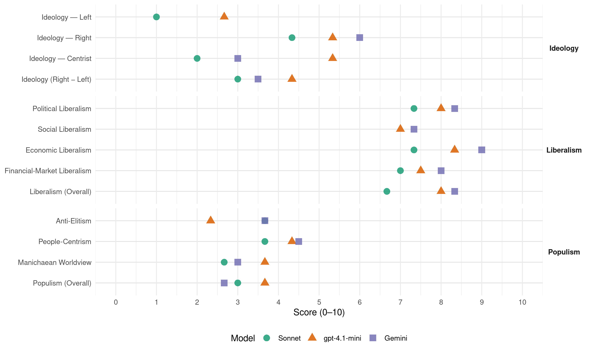

Republicans (United States, 2000)
manifesto_id 61620_200011
Get full text: This site shows derived annotations and short verbatim quotes only. The full manifesto text is © Manifesto Project / WZB — obtain it via manifesto-project.wzb.eu using the manifesto_id above.
Headline scores
| Dimension | Sonnet | gpt-4.1-mini | Gemini |
|---|---|---|---|
| Populism (Overall) | 3.0 | 3.7 | 2.7 |
| Anti-Elitism | 3.7 | 2.3 | 3.7 |
| People-Centrism | 3.7 | 4.3 | 4.5 |
| Manichaean Worldview | 2.7 | 3.7 | 3.0 |
| Ideology (Right − Left) | 3.0 | 4.3 | 3.5 |
| Liberalism (Overall) | 6.7 | 8.0 | 8.3 |
| Political Liberalism | 7.3 | 8.0 | 8.3 |
| Social Liberalism | – | 7.0 | 7.3 |
| Economic Liberalism | 7.3 | 8.3 | 9.0 |
| Financial-Market Liberalism | 7.0 | 7.5 | 8.0 |
Evidence per dimension
Economic Liberalism
Gemini · score 9.0 · verified · chunk 1
“cut tax rates, simplified the tax code”
Inspired by Presidents Reagan and Bush, Republicans hammered into place the framework for today’s prosperity and surpluses. We cut tax rates, simplified the tax code, deregulated industries, and opened world markets
Gemini · score 9.0 · verified · chunk 2
“promote market-based programs that are voluntary, flexible, comprehensive, and cost-effective”
Wherever it is environmentally responsible to do so, we will promote market-based programs that are voluntary, flexible, comprehensive, and cost-effective.
Gemini · score 9.0 · verified · chunk 3
“developing the market economies”
These countries are today making great progress toward developing the market economies and democratic political systems that are the best way
gpt-4.1-mini · score 9.0 · verified · chunk 1
“We cut tax rates, simplified the tax code, deregulated industries, and opened world markets”
Inspired by Presidents Reagan and Bush, Republicans hammered into place the framework for today’s prosperity and surpluses. We cut tax rates, simplified the tax code, deregulated industries, and opened world markets to American enterprise.
gpt-4.1-mini · score 8.0 · verified · chunk 2
“free trade and the free flow of information”
Rooted in America’s political and economic ideals, this Republican blueprint promotes open markets and open societies, free trade and the free flow of information, and the development of new ideas and private sectors.
gpt-4.1-mini · score 8.0 · verified · chunk 3
“developing the market economies and democratic political systems”
These countries are today making great progress toward developing the market economies and democratic political systems that are the best way to ensure both their long-term stability and their security.
Sonnet · score 8.0 · verified · chunk 1
“cut tax rates, simplified the tax code, deregulated industries”
Inspired by Presidents Reagan and Bush, Republicans hammered into place the framework for today’s prosperity: We cut tax rates, simplified the tax code, deregulated industries, and opened world markets
Sonnet · score 7.0 · verified · chunk 2
“open domestic and foreign markets”
As long as they have truly fair and open domestic and foreign markets, they can do for themselves far better than anything government can do for them.
Sonnet · score 7.0 · verified · chunk 3
“free market economies should continue”
The enlargement of NATO to include other nations with democratic values, pluralist political systems, and free market economies should continue
Financial-Market Liberalism
Gemini · score 8.0 · verified · chunk 1
“access to capital for entrepreneurs and access to credit”
starts with access to capital for entrepreneurs and access to credit for consumers. Our proposals for helping millions
Gemini · score 8.0 · verified · chunk 2
“promoting sound fiscal and monetary policies”
The IMF should concentrate on its original mission of promoting sound fiscal and monetary policies, advancing sound central banking
gpt-4.1-mini · score 8.0 · verified · chunk 1
“The stock market, once a preserve of the well to do, now drives forward with the modest investments”
The stock market, once a preserve of the well to do, now drives forward with the modest investments of tens of millions of households as ownership in America’s economy becomes the norm rather than the exception.
gpt-4.1-mini · score 7.0 · verified · chunk 2
“transparency and accountability, tackling corruption”
The IMF should concentrate on its original mission of promoting sound fiscal and monetary policies, advancing sound central banking practices, and easing global exchange rate adjustments. It should improve transparency and accountability, tackling corruption rather than contributing to it.
Sonnet · score 8.0 · verified · chunk 1
“capital gains tax from 28 percent to 20 percent”
In 1997 the Republican Congress cut the capital gains tax from 28 percent to 20 percent. As a result capital gains for Americans doubled and federal government tax receipts from capital gains jumped
Sonnet · score 6.0 · verified · chunk 2
“Futures trading should be deregulated”
Futures trading should be deregulated. Regional restrictions on dairy products that drive up consumer prices and penalize productive farmers should be ended.
Political Liberalism
Gemini · score 8.0 · verified · chunk 1
“founding principles of freedom and limited government”
special calling - to advance the founding principles of freedom and limited government and the dignity and worth of every
Gemini · score 8.0 · verified · chunk 2
“political and economic liberty, human dignity, and the rule of law”
when more and more countries share a profound belief in political and economic liberty, human dignity, and the rule of law, when more
Gemini · score 9.0 · verified · chunk 3
“developing the market economies and democratic political systems”
These countries are today making great progress toward developing the market economies and democratic political systems that are the best way
gpt-4.1-mini · score 8.0 · verified · chunk 1
“Democracy thrives on well-informed citizens”
Democracy thrives on well-informed citizens, and now the public will have unprecedented access to the workings of government, including the voting records of their Members of Congress and the written opinions of judges, whose decisions will now be reviewable in the court of public opinion.
gpt-4.1-mini · score 8.0 · verified · chunk 2
“democratic freedoms of speech, press, and association”
The First Amendment enshrines in our Constitution and guarantees indispensable democratic freedoms of speech, press, and association, and, the right to petition our government.
gpt-4.1-mini · score 8.0 · verified · chunk 3
“the rule of law”
The United States should show its concern about Russia’s future by focusing on the structures, spirit, and reality of democracy in Russia, embodied by the rule of law.
Sonnet · score 7.0 · verified · chunk 1
“Democracy thrives on well-informed citizens”
Republicans welcome the Information Revolution to the political arena too. Democracy thrives on well-informed citizens, and now the public will have unprecedented access to the workings of government
Sonnet · score 7.0 · verified · chunk 2
“First Amendment enshrines in our Constitution”
The First Amendment enshrines in our Constitution and guarantees indispensable democratic freedoms of speech, press, and association, and, the right to petition our government.
Sonnet · score 8.0 · verified · chunk 3
“forward defense of democracy”
We are proud that America’s longstanding commitment to the forward defense of democracy is being rewarded as Europe becomes whole and free
Liberalism (Overall)
Gemini · score 8.0 · verified · chunk 1
“founding principles of freedom and limited government”
special calling - to advance the founding principles of freedom and limited government and the dignity and worth of every
Gemini · score 8.0 · verified · chunk 2
“political and economic liberty, human dignity, and the rule of law”
when more and more countries share a profound belief in political and economic liberty, human dignity, and the rule of law, when more
Gemini · score 9.0 · verified · chunk 3
“developing the market economies and democratic political systems”
These countries are today making great progress toward developing the market economies and democratic political systems that are the best way
gpt-4.1-mini · score 8.0 · verified · chunk 1
“We cut tax rates, simplified the tax code, deregulated industries, and opened world markets”
Inspired by Presidents Reagan and Bush, Republicans hammered into place the framework for today’s prosperity and surpluses. We cut tax rates, simplified the tax code, deregulated industries, and opened world markets to American enterprise.
gpt-4.1-mini · score 8.0 · verified · chunk 2
“democratic freedoms of speech, press, and association”
The First Amendment enshrines in our Constitution and guarantees indispensable democratic freedoms of speech, press, and association, and, the right to petition our government.
gpt-4.1-mini · score 8.0 · verified · chunk 3
“developing the market economies and democratic political systems”
These countries are today making great progress toward developing the market economies and democratic political systems that are the best way to ensure both their long-term stability and their security.
Sonnet · score 7.0 · verified · chunk 1
“open markets, to minimal regulations, and to reducing taxes”
These initiatives are grounded in a steadfast commitment to open markets, to minimal regulations, and to reducing taxes that snuff out innovation
Sonnet · score 6.0 · verified · chunk 2
“open markets and open societies, free trade”
Rooted in America’s political and economic ideals, this Republican blueprint promotes open markets and open societies, free trade and the free flow of information, and the development of new ideas and private sectors.
Sonnet · score 7.0 · verified · chunk 3
“market economies and democratic political systems”
These countries are today making great progress toward developing the market economies and democratic political systems that are the best way
Anti-Elitism
Gemini · score 3.0 · verified · chunk 1
“control of government out of Washington”
colleges, and moved control of government out of Washington, back into the hands of the people.
Gemini · score 4.0 · verified · chunk 2
“unelected elites imposing their often flawed solutions”
The International Monetary Fund and the World Bank should no longer stand for unelected elites imposing their often flawed solutions to tough problems
Gemini · score 4.0 · verified · chunk 3
“propped up corrupt elites”
The current administration’s quixotic efforts have only propped up corrupt elites, identified America with discredited factions
gpt-4.1-mini · score 3.0 · verified · chunk 1
“an administration that lives by evasion, coverup, stonewalling, and duplicity”
The rule of law, the very foundation for a free society, has been under assault, not only by criminals from the ground up, but also from the top down. An administration that lives by evasion, coverup, stonewalling, and duplicity has given us a totally discredited Department of Justice.
gpt-4.1-mini · score 2.0 · verified · chunk 2
“scapegoating of legitimate economic interests”
* Scare tactics and scapegoating of legitimate economic interests undermine support for environmental causes and, what is worse, can discredit actual threats to health and safety.
gpt-4.1-mini · score 2.0 · verified · chunk 3
“corrupt elites”
Democracy can help ensure that the interests of the people are elevated above the preoccupations and self-enrichment of corrupt elites. Some of Africa’s developing countries are turning to private markets, building middle classes, and evolving toward more representative forms of government that respect individual liberties.
Sonnet · score 3.0 · verified · chunk 1
“Democratic Congress passed the largest tax hike”
We could have lost it all after the Democratic Congress passed the largest tax hike in history in 1993 that threatened to bring back the tax-and-spend follies
Sonnet · score 4.0 · verified · chunk 2
“unelected elites imposing their often flawed solutions”
The International Monetary Fund and the World Bank should no longer stand for unelected elites imposing their often flawed solutions to tough problems by offering bailouts of corrupt officials and risk-taking investors.
Sonnet · score 4.0 · verified · chunk 3
“propped up corrupt elites”
The current administration’s quixotic efforts have only propped up corrupt elites, identified America with discredited factions and failed policies
Ideology — Centrist
Gemini · score 3.0 · verified · chunk 1
“back into the hands of the people”
government out of Washington, back into the hands of the people. We believe in service to the common
gpt-4.1-mini · score 6.0 · verified · chunk 1
“calls all citizens to common goals”
After a period of bitter division in national politics, our nominee is a leader who brings people together. In a time of fierce partisanship, he calls all citizens to common goals.
gpt-4.1-mini · score 5.0 · verified · chunk 2
“trust, pride, and respect: we pledge to restore these qualities to the way Americans view their government”
Government for the People Trust, pride, and respect: we pledge to restore these qualities to the way Americans view their government. It is the most important of tasks and reflects the overwhelming desire of our citizens for fundamental change in official Washington.
gpt-4.1-mini · score 5.0 · verified · chunk 3
“the interests of the people are elevated above the preoccupations and self-enrichment of corrupt elites”
Democracy can help ensure that the interests of the people are elevated above the preoccupations and self-enrichment of corrupt elites. Some of Africa’s developing countries are turning to private markets, building middle classes, and evolving toward more representative forms of government that respect individual liberties.
Sonnet · score 2.0 · verified · chunk 1
“party of freedom and progress, and it is your home”
To all Americans, particularly immigrants and minorities, we send a clear message: this is the party of freedom and progress, and it is your home
Sonnet · score 2.0 · verified · chunk 2
“making government citizen-centered, results-oriented”
These visionary leaders have opened a new era of creative federalism, making government citizen-centered, results-oriented, and, where possible, market-based.
Sonnet · score 2.0 · verified · chunk 3
“principled American leadership”
After the wavering and ambivalence of the current administration, Americans have a fresh chance — principled American leadership
Ideology — Left
gpt-4.1-mini · score 3.0 · verified · chunk 1
“welfare reform legislation in 1996 that has helped millions of Americans break the cycle of welfare”
Inspired by the innovative reforms of Republican governors that successfully moved families from welfare dependence to the independence of work, congressional Republicans passed landmark welfare reform legislation in 1996 that has helped millions of Americans break the cycle of welfare and gain independence for their families.
gpt-4.1-mini · score 2.0 · verified · chunk 2
“waste has been reduced. Taxes have been cut.”
Their sound management of public dollars has led to unprecedented surpluses. Services have improved. Waste has been reduced. Taxes have been cut. State and local governments are also far ahead of official Washington in the creation of e-government:
gpt-4.1-mini · score 3.0 · verified · chunk 3
“corrupt elites”
Democracy can help ensure that the interests of the people are elevated above the preoccupations and self-enrichment of corrupt elites. Some of Africa’s developing countries are turning to private markets, building middle classes, and evolving toward more representative forms of government that respect individual liberties.
Sonnet · score 1.0 · verified · chunk 1
“six million families will no longer pay any federal income tax”
with the tax cuts we propose, while every taxpayer benefits, six million families - one in five taxpaying families with children - will no longer pay any federal income tax
Sonnet · score 1.0 · verified · chunk 2
“equality for women in the delivery of health care”
Republicans are dedicated to pursuing comprehensive women’s health care initiatives that include access to state-of-the-art medical advances and technology; equality for women in the delivery of health care services
Sonnet · score 1.0 · verified · chunk 3
“reduce trade barriers”
We will help the continent achieve its economic potential by implementing measures to reduce trade barriers
Ideology (Right − Left)
Gemini · score 2.0 · verified · chunk 1
“back into the hands of the people”
government out of Washington, back into the hands of the people. We believe in service to the common
Gemini · score 5.0 · verified · chunk 2
“without compromising America’s sovereignty or competitiveness”
reduce harmful emissions through new technologies without compromising America’s sovereignty or competitiveness - and without forcing
gpt-4.1-mini · score 5.0 · verified · chunk 1
“calls all citizens to common goals”
After a period of bitter division in national politics, our nominee is a leader who brings people together. In a time of fierce partisanship, he calls all citizens to common goals.
gpt-4.1-mini · score 5.0 · verified · chunk 2
“trust, pride, and respect: we pledge to restore these qualities to the way Americans view their government”
Government for the People Trust, pride, and respect: we pledge to restore these qualities to the way Americans view their government. It is the most important of tasks and reflects the overwhelming desire of our citizens for fundamental change in official Washington.
gpt-4.1-mini · score 3.0 · verified · chunk 3
“corrupt elites”
Democracy can help ensure that the interests of the people are elevated above the preoccupations and self-enrichment of corrupt elites. Some of Africa’s developing countries are turning to private markets, building middle classes, and evolving toward more representative forms of government that respect individual liberties.
Sonnet · score 3.0 · verified · chunk 1
“recognition of English as the nation’s common language”
We support the recognition of English as the nation’s common language. At the same time, mastery of other languages is important
Sonnet · score 4.0 · verified · chunk 2
“homosexuality is incompatible with military service”
We affirm traditional military culture. We affirm that homosexuality is incompatible with military service. The U.S. military under the leadership of a Republican President
Sonnet · score 2.0 · verified · chunk 3
“propped up corrupt elites”
The current administration’s quixotic efforts have only propped up corrupt elites, identified America with discredited factions and failed policies
Ideology — Right
Gemini · score 6.0 · verified · chunk 2
“without compromising America’s sovereignty or competitiveness”
reduce harmful emissions through new technologies without compromising America’s sovereignty or competitiveness - and without forcing
gpt-4.1-mini · score 7.0 · verified · chunk 1
“We support the traditional definition of”marriage” as the legal union of one man and one woman”
We support the traditional definition of “marriage” as the legal union of one man and one woman, and we believe that federal judges and bureaucrats should not force states to recognize other living arrangements as marriages.
gpt-4.1-mini · score 7.0 · verified · chunk 2
“homosexuality is incompatible with military service”
We affirm traditional military culture. We affirm that homosexuality is incompatible with military service. The U.S. military under the leadership of a Republican President and a Republican Congress will focus on its most demanding task - fighting and winning in combat.
gpt-4.1-mini · score 2.0 · verified · chunk 3
“Russia must never be given a veto over enlargement”
Neither geographical nor historical circumstances shall dictate the future of a Europe whole and free. Russia must never be given a veto over enlargement.
Sonnet · score 4.0 · verified · chunk 1
“recognition of English as the nation’s common language”
We support the recognition of English as the nation’s common language. At the same time, mastery of other languages is important
Sonnet · score 5.0 · verified · chunk 2
“homosexuality is incompatible with military service”
We affirm traditional military culture. We affirm that homosexuality is incompatible with military service. The U.S. military under the leadership of a Republican President
Sonnet · score 4.0 · verified · chunk 3
“America that is far less dependent”
Republicans prefer an America that is far less dependent on foreign crude oil
Manichaean Worldview
Gemini · score 3.0 · verified · chunk 2
“those who hate America”
detect, track, and prevent infectious outbreaks, whether natural or provoked by those who hate America.
gpt-4.1-mini · score 4.0 · verified · chunk 1
“forces of hatred and bigotry”
As we strive to forge a national consensus on the crucial issues of our time, we call on all Americans to reject the forces of hatred and bigotry.
gpt-4.1-mini · score 4.0 · verified · chunk 2
“those who hate America”
We pledge to ensure the ability of the public health service to detect, track, and prevent infectious outbreaks, whether natural or provoked by those who hate America.
gpt-4.1-mini · score 3.0 · verified · chunk 3
“corrupt elites, identified America with discredited factions”
The current administration’s quixotic efforts have only propped up corrupt elites, identified America with discredited factions and failed policies, and encouraged anti-Americanism.
Sonnet · score 2.0 · verified · chunk 1
“old left-liberal order of social policy has collapsed”
It’s clear that the old left-liberal order of social policy has collapsed in failure; and its failure was the most egregious among whom it most professed to serve
Sonnet · score 3.0 · verified · chunk 2
“white flag policies of recent years”
by a real war on drugs in place of the white flag policies of recent years. Our commitment is to address the emotional, behavioral, and mental illnesses affecting children.
Sonnet · score 3.0 · verified · chunk 3
“simple hatred of America”
terrorists seem to be motivated by amorphous religious causes or simple hatred of America rather than by specific political aims
People-Centrism
Gemini · score 4.0 · verified · chunk 1
“back into the hands of the people”
government out of Washington, back into the hands of the people. We believe in service to the common
Gemini · score 5.0 · verified · chunk 2
“trust the innate good sense and decency of the American people”
Our way is to trust the innate good sense and decency of the American people. We will make them partners
gpt-4.1-mini · score 7.0 · verified · chunk 1
“calls all citizens to common goals”
After a period of bitter division in national politics, our nominee is a leader who brings people together. In a time of fierce partisanship, he calls all citizens to common goals.
gpt-4.1-mini · score 3.0 · verified · chunk 2
“trust, pride, and respect: we pledge to restore these qualities to the way Americans view their government”
Government for the People Trust, pride, and respect: we pledge to restore these qualities to the way Americans view their government. It is the most important of tasks and reflects the overwhelming desire of our citizens for fundamental change in official Washington.
gpt-4.1-mini · score 3.0 · verified · chunk 3
“the interests of the people are elevated”
Democracy can help ensure that the interests of the people are elevated above the preoccupations and self-enrichment of corrupt elites. Some of Africa’s developing countries are turning to private markets, building middle classes, and evolving toward more representative forms of government that respect individual liberties.
Sonnet · score 4.0 · verified · chunk 1
“return half a trillion dollars to the taxpayers who really own it”
we will return half a trillion dollars to the taxpayers who really own it, without touching the Social Security surplus
Sonnet · score 4.0 · verified · chunk 2
“trust the innate good sense and decency of the American people”
Our way is to trust the innate good sense and decency of the American people. We will make them partners with government, rather than adversaries of it.
Sonnet · score 3.0 · verified · chunk 3
“help the Russian people”
We will do this by directing our aid and attention to help the Russian people, not enriching the bank accounts of corrupt officials
Populism (Overall)
Gemini · score 2.0 · verified · chunk 1
“back into the hands of the people”
government out of Washington, back into the hands of the people. We believe in service to the common
Gemini · score 4.0 · verified · chunk 2
“unelected elites imposing their often flawed solutions”
The International Monetary Fund and the World Bank should no longer stand for unelected elites imposing their often flawed solutions to tough problems
Gemini · score 2.0 · verified · chunk 3
“propped up corrupt elites”
The current administration’s quixotic efforts have only propped up corrupt elites, identified America with discredited factions
gpt-4.1-mini · score 5.0 · verified · chunk 1
“calls all citizens to common goals”
After a period of bitter division in national politics, our nominee is a leader who brings people together. In a time of fierce partisanship, he calls all citizens to common goals.
gpt-4.1-mini · score 3.0 · verified · chunk 2
“scapegoating of legitimate economic interests”
* Scare tactics and scapegoating of legitimate economic interests undermine support for environmental causes and, what is worse, can discredit actual threats to health and safety.
gpt-4.1-mini · score 3.0 · verified · chunk 3
“corrupt elites”
Democracy can help ensure that the interests of the people are elevated above the preoccupations and self-enrichment of corrupt elites. Some of Africa’s developing countries are turning to private markets, building middle classes, and evolving toward more representative forms of government that respect individual liberties.
Sonnet · score 3.0 · verified · chunk 1
“return half a trillion dollars to the taxpayers”
we will return half a trillion dollars to the taxpayers who really own it, without touching the Social Security surplus
Sonnet · score 3.0 · verified · chunk 2
“unelected elites imposing their often flawed solutions”
The International Monetary Fund and the World Bank should no longer stand for unelected elites imposing their often flawed solutions to tough problems by offering bailouts of corrupt officials and risk-taking investors.
Sonnet · score 3.0 · verified · chunk 3
“propped up corrupt elites”
The current administration’s quixotic efforts have only propped up corrupt elites, identified America with discredited factions and failed policies
Social Liberalism